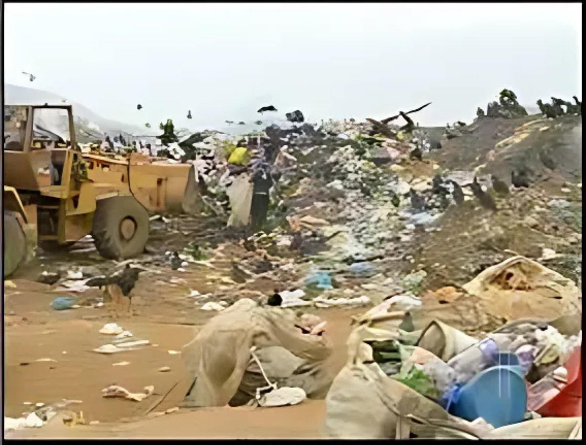

Por Gabriel Machado, Gabriel Monteiro, Miguel, Ana Luiza e Nicolly - 27 de novembro de 2024
A situação preocupante do lixão de São Fidélis
Lixão de São Fidélis é tratado com negligência por anos, agravando diversos problemas ambientais
Lixões são formas inadequadas de descarte de resíduos sólidos, caracterizados pelo amontoamento de lixo diretamente sobre o solo. Os lixões são extremamente nocivos ao meio ambiente, à saúde e à qualidade de vida, pois poluem o solo com o contato do lixo, desvalorizam as áreas ao redor, atraem animais transmissores de doenças, são prejudiciais à saúde dos catadores e da população local, principalmente pelo contato com os resíduos, entre outros prejuízos. O lixão de São Fidélis, apesar de tentativas de desativação ao longo dos anos, continua ativo, trazendo complicações ambientais.
Os lixões são pilhas de descarte a céu aberto, extremamente nocivas ao meio ambiente. A decomposição dos montes de lixo gera chorume, um elemento altamente tóxico e poluente, composto por metais pesados, resíduos orgânicos e substâncias químicas. No lixão, o chorume alcança os lençóis freáticos e pode atingir rios e lagos por meio da chuva, contaminando a água e podendo até torná-la imprópria para consumo. Os lixões também são emissores de gases do efeito estufa, como o metano, além de gerarem gases tóxicos prejudiciais à população. O lixo também impacta a proliferação de doenças como dengue e leptospirose e prejudica o ecossistema com a contaminação. Outro problema é o mau cheiro e a poluição visual.
O lixão de São Fidélis apresenta todos esses problemas e é um caso não resolvido por várias décadas, muitas vezes tratado com negligência. Em 2007, a prefeitura assinou um Termo de Ajustamento de Conduta e abriu um posto de reciclagem, que foi fechado e abandonado após quatro anos. O prazo para a erradicação do lixão já foi apresentado. Em 2010, a PNRS apresentou 2014 como o prazo para o fim dos aterros a céu aberto, o que não ocorreu devidamente em São Fidélis e em outros municípios. Já em 2020, esse prazo foi estendido pelo Marco Legal do Saneamento para agosto de 2024, o qual São Fidélis também excedeu.
"O lixão está em processo de encerramento.", disse Said Junior, secretário do meio ambiente. "O governo municipal tem atuado junto ao governo estadual na proposição de ações que visam encerrar as atividades do lixão. Atualmente está em andameno a construção de uma estação de transferência de resíduos (ETR) - transbordo para recebimento e envio desses resíduos para o aterro municipal vizinho."
Em 2013, foi terminada a obra do aterro sanitário de Pureza, que comportaria o lixo de 13 cidades, incluindo São Fidélis, Cardoso Moreira, Itaocara, Italva, Aperibé, Santo Antônio de Pádua, Miracema e Cambuci. A construção custou cerca de 12 milhões de reais, mas o aterro nunca foi inaugurado. Desafios para o uso do aterro incluem a contaminação do lençol freático na região de Pureza, o que trouxe descontentamento à população. Em 2021, ocorreu uma conferência entre prefeitos e representantes dos municípios associados ao projeto para finalmente discutir a inauguração do aterro sanitário. Para sua abertura, o aterro necessita de reparos devido a desgastes naturais e fiscalizações para prevenir a contaminação.
"O maior desafio era cumprir a legislação da política de resíduos sólidos para todos os municípios. O estado ofereceu essa oportunidade na época, aportando o valor da construção da obra. Todos os municípios queriam, principalmente porque o Ministério Público cobrava muito os municípios dessa destinação correta para os resíduos, e os municípios sozinhos não conseguiriam cumprir essa exigência legal", afirmou Higor Porto, que participou do projeto na época.
"Foi criado, a partir do governo do estado, o Consóricio Noroeste. A princípio, a cidade estaria no Consórcio Noroeste I, com 7 municípios das regiões norte e noroeste. Existiriam dois aterros sanitários, o aterro sanitário 1, no distrito de Pureza em São Fidélis, e o aterro sanitário 2 em Itaperuna. Esse segundo não saiu do papel, o Estado nem mesmo conseguiu adiquirir a área de construção. Com apenas um aterro, um dos maiores problemas era que 15 municípios ficaram no mesmo consórcio, onde o estado também era consorciado. Isso trouxe uma série de dificuldades como a distância. Imagine, por exemplo, o município de Varre Sai, um dos municípios mais distantes, que faz divisa com Minas Gerais, trazer resíduos para São Fidélis. Fica praticamente inviável a existência de somente um aterro sanitário. Problemas como esse geraram uma série de divergências e discussões que fizeram com que seu funcionamento não fosse colocado em execução para atender os municípios." Explica Higor.
O aterro sanitário seria uma forma legal de descartar o nosso lixo, nosso resíduo sólido, sendo reconhecido como uma forma correta de destinação desse tipo de resíduo, que não traz danos ao meio ambiente. Seria uma maneira em que as cidades, não apenas São Fidélis, estariam cumprindo a legislação e também dando o destino correto para o lixo produzido pela população. Em minha avaliação, entendo que não haveria nada negativo de um projeto como esse no município, se a obra for efetuada corretamente, com as mantas adequadas para não afetar o solo, um acompanhamento periódico posterior verificando a construção e execução do aterro sanitário. O aterro também geraria empregos. Existia uma expectativa de 60 a 100 empregos gerados diretamente. Seria um alívio para o meio ambiente e para a população, principalmente de Coroados e parte do Cristo Rei, que acabam sofrendo com o lixão pelo vento.
"O projeto do aterro sanitário foi realizado através do Consórcio Público de Gestão Associada e Integrada do Serviço de Limpeza Urbana e Manejo de Resíduos Sólidos – Noroeste I, uma parceria entre o governo estadual e os 92 muncípios do estado do RJ. Um dos impasses do projeto foi a não aceitação pela população de Pureza devivo ao número de municípios que utilizariam o aterro no local. As discussões públicas não foram favoráveis ao andamento do projeto.", afirmou o secretário Said.
Por fim, o lixão de São Fidélis é uma solução atrasada que já deveria ter sido revisada há anos, causando graves problemas ambientais e sociais. Apesar de prazos já terem sido apresentados, o problema persiste até os dias de hoje. O aterro sanitário de Pureza é uma possível solução, porém necessita de revisões e reparos para sua tardia inauguração.